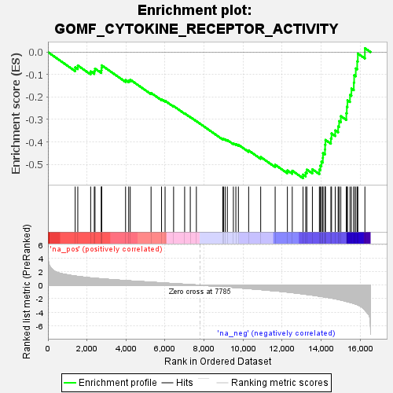

| | | Dataset | all_genes |
| Phenotype | NoPhenotypeAvailable |
| Upregulated in class | na_neg |
| GeneSet | GOMF_CYTOKINE_RECEPTOR_ACTIVITY |
| Enrichment Score (ES) | -0.5619053 |
| Normalized Enrichment Score (NES) | -1.8791554 |
| Nominal p-value | 0.0011467889 |
| FDR q-value | 0.023914052 |
| FWER p-Value | 0.616 |
Table: GSEA Results Summary

Fig 1: Enrichment plot: GOMF_CYTOKINE_RECEPTOR_ACTIVITY
Profile of the Running ES Score & Positions of GeneSet Members on the Rank Ordered List
| SYMBOL | RANK IN GENE LIST | RANK METRIC SCORE | RUNNING ES | CORE ENRICHMENT | | 1 | IL1RAPL2 | 1396 | 1.361 | -0.0678 | No |
| 2 | FZD4 | 1529 | 1.313 | -0.0594 | No |
| 3 | CD4 | 2189 | 1.088 | -0.0858 | No |
| 4 | IL17RB | 2375 | 1.036 | -0.0842 | No |
| 5 | CXCR4 | 2411 | 1.029 | -0.0735 | No |
| 6 | IL13RA1 | 2735 | 0.947 | -0.0813 | No |
| 7 | IFNAR1 | 2748 | 0.945 | -0.0702 | No |
| 8 | IFNAR2 | 2756 | 0.942 | -0.0589 | No |
| 9 | IL1RAP | 3978 | 0.684 | -0.1245 | No |
| 10 | IL17RD | 4137 | 0.653 | -0.1259 | No |
| 11 | IFNGR2 | 4217 | 0.639 | -0.1227 | No |
| 12 | LEPR | 5284 | 0.451 | -0.1818 | No |
| 13 | IFNGR1 | 5821 | 0.351 | -0.2100 | No |
| 14 | GHR | 6002 | 0.319 | -0.2169 | No |
| 15 | CD74 | 6439 | 0.238 | -0.2404 | No |
| 16 | F3 | 7005 | 0.145 | -0.2729 | No |
| 17 | PRLR | 7294 | 0.093 | -0.2892 | No |
| 18 | ACKR3 | 7606 | 0.036 | -0.3077 | No |
| 19 | IL6ST | 8961 | -0.217 | -0.3871 | No |
| 20 | OSMR | 8997 | -0.225 | -0.3865 | No |
| 21 | IL27RA | 9081 | -0.242 | -0.3885 | No |
| 22 | CCR1 | 9193 | -0.266 | -0.3919 | No |
| 23 | CD44 | 9502 | -0.328 | -0.4065 | No |
| 24 | IL20RB | 9629 | -0.356 | -0.4097 | No |
| 25 | IL10RB | 9759 | -0.386 | -0.4127 | No |
| 26 | LIFR | 10285 | -0.509 | -0.4382 | No |
| 27 | IL18R1 | 10902 | -0.656 | -0.4675 | No |
| 28 | IL1R2 | 11643 | -0.843 | -0.5019 | No |
| 29 | CNTFR | 12270 | -1.023 | -0.5271 | No |
| 30 | IL13RA2 | 12519 | -1.104 | -0.5284 | No |
| 31 | ACKR4 | 13072 | -1.303 | -0.5457 | Yes |
| 32 | IL17RA | 13207 | -1.355 | -0.5369 | Yes |
| 33 | GPR75 | 13268 | -1.376 | -0.5234 | Yes |
| 34 | IL21R | 13551 | -1.480 | -0.5220 | Yes |
| 35 | CCR10 | 13909 | -1.631 | -0.5234 | Yes |
| 36 | IL20RA | 13960 | -1.648 | -0.5059 | Yes |
| 37 | GPR35 | 14014 | -1.676 | -0.4882 | Yes |
| 38 | IL31RA | 14087 | -1.714 | -0.4712 | Yes |
| 39 | IL1RL1 | 14094 | -1.718 | -0.4501 | Yes |
| 40 | CMKLR1 | 14196 | -1.770 | -0.4342 | Yes |
| 41 | EPOR | 14202 | -1.773 | -0.4124 | Yes |
| 42 | IL12RB1 | 14219 | -1.779 | -0.3912 | Yes |
| 43 | GFRA2 | 14499 | -1.905 | -0.3844 | Yes |
| 44 | IL17RC | 14533 | -1.920 | -0.3624 | Yes |
| 45 | IL22RA1 | 14721 | -2.020 | -0.3486 | Yes |
| 46 | IL7R | 14870 | -2.116 | -0.3312 | Yes |
| 47 | CRLF1 | 14920 | -2.149 | -0.3074 | Yes |
| 48 | IL11RA | 15008 | -2.197 | -0.2853 | Yes |
| 49 | IL4R | 15289 | -2.412 | -0.2722 | Yes |
| 50 | IL17RE | 15315 | -2.431 | -0.2434 | Yes |
| 51 | IFNLR1 | 15348 | -2.456 | -0.2147 | Yes |
| 52 | CSF2RA | 15478 | -2.550 | -0.1907 | Yes |
| 53 | IL10RA | 15551 | -2.615 | -0.1625 | Yes |
| 54 | IL6R | 15674 | -2.718 | -0.1360 | Yes |
| 55 | GFRA1 | 15691 | -2.734 | -0.1029 | Yes |
| 56 | CCR4 | 15774 | -2.824 | -0.0726 | Yes |
| 57 | IL12RB2 | 15847 | -2.893 | -0.0409 | Yes |
| 58 | IL15RA | 15880 | -2.929 | -0.0064 | Yes |
| 59 | IL1R1 | 16242 | -3.684 | 0.0177 | Yes |
Table: GSEA details [plain text format]
Fig 2: GOMF_CYTOKINE_RECEPTOR_ACTIVITY: Random ES distribution
Gene set null distribution of ES for GOMF_CYTOKINE_RECEPTOR_ACTIVITY